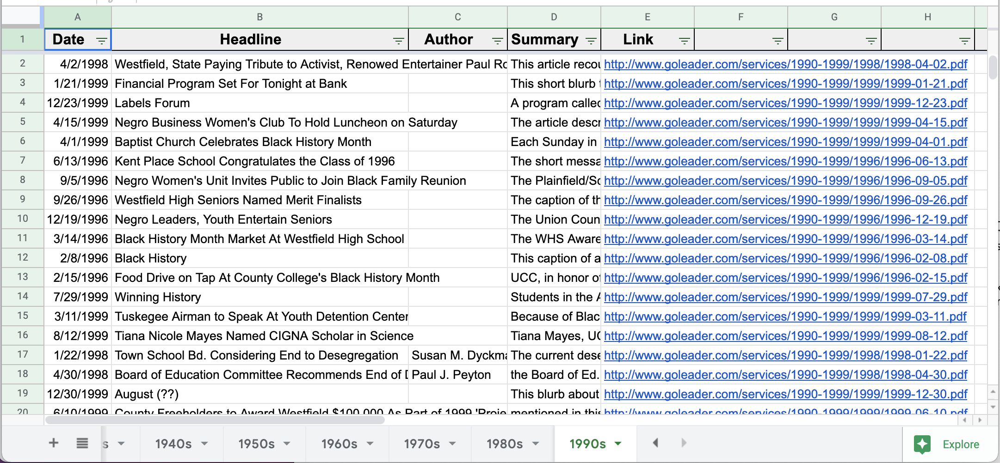

African-American History in Westfield, NJ
Dr. Martin Luther King Jr. Association of Westfield
The Dr. Martin Luther King Jr. Association is a non-profit organization founded in Westfield, New Jersey in 1987. The mission of the organization is to keep the memory of Dr. King alive by focusing the community on the important tenets from the words and life of Dr. King. The group advocates for the principles of justice, fairness, brotherhood, and non-violent community action espoused by Dr. King.
I worked with the Dr. Martin Luther King Jr. (MLK) Association and the Westfield Historical Society to produce a public history of the African-American community in Westfield. The African-American community has historically been underepresented in Westfield's history and this project sought to restore African-American residents and their contributions to the historical narrative. I created an internshp program for high school students and worked in a team to conduct research and create a virtual exhibit. The final outcome of this project was a walking tour, a brochure, and an interactive timeline.
Goal
Educate Westfield residents on local African-American history and restore the African-American community to the broader historical narrative
Timeline
May to September 2020
Skills
- Public history
- Archival research
- Reading against the grain
Tools
- Time Graphics
- Clio
- Digital archives of the Westfield Leader
Process
The majority of our research relied on a database of digitized news articles from the Westfield Leader, the town's local newspaper. I recruited and worked with six high school interns to sort through the database and find any articles pertaining to the African-American community. Unfortunately, very little official documentation of the African-American community exists in Westfield so this project relied on subaltern methodologies such as reading against the grain to gather evidence and draw conclusions.
I created a spreadsheet to track the articles we found and met with the interns on a weekly basis over Zoom to discuss our findings. Over the course of the summer, we collected over 150 articles from 1910 to 2000 that spoke to the African-American community.
Once this research was complete, I consulted with the MLK Association and the Westfield Historical Society to determine what they needed. Since this was in the midst of a pandemic, it was vital that the project existed in a digital format and was accessible to everyone. We decided to create a walking tour in Clio, a website dedicated to documenting historic sites, and supplement this walking tour with an interactive timeline.
I worked with my students to select the most important articles and findings from our research to insert into an interactive timeline. We created 38 events for our timeline with images and descriptions.
Outcome
The outcome of our project was a walking tour, an interactive timeline, and a brochure with a history of the African-American experience in Westfield. You can find the walking tour here.